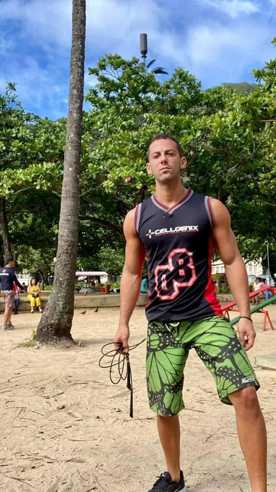
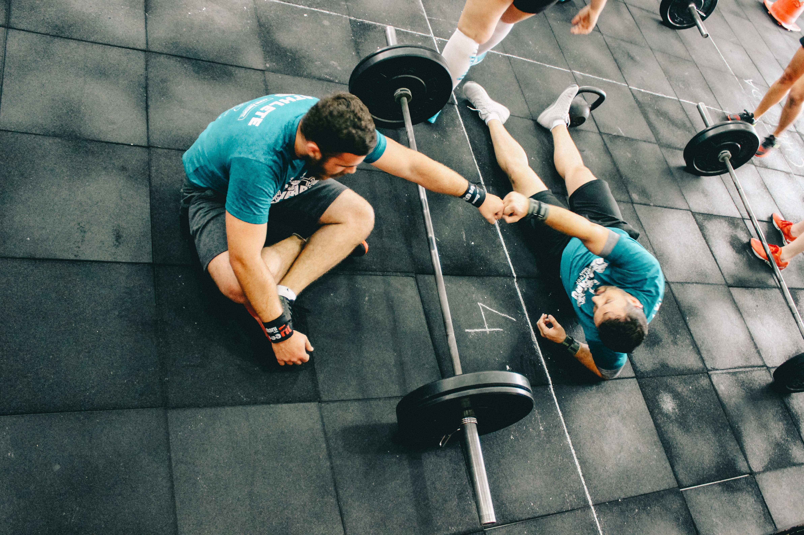

Me chamo Rafael D'avila, sou formado em Educação Física pelo
Instituto Brasileiro de Medicina de Reabilitação (IBMR), especialista em Gerontologia. Possuo uma ampla experiência na área do desenvolvimento físico,
entre elas: treinamento funcional, treino de força, aeróbico e hipertrofia, faço consultoria esportiva e sou personal trainer.

Serviços
Treinamento funcional
O objetivo do treinamento funcional é potencializar e transformar a sua capacidade de realizar atividades diárias. Portanto, o treinamento funcional não se resume apenas a um músculo específico, é sobre a totalidade. Por exemplo, quando você pula cordas você não está utilizando apenas os músculos da perna.
Na verdade, o processo é mais complexo: você está utilizando seu sistema nervoso, cardiovascular, respiratório, entre outras vertentes. E aprender a se adaptar a esse processo ao longo da vida é fundamental. Afinal, os exercícios funcionais mudam conforme nossa idade e necessidades.
Beneficios
1. Ganho no condicionamento físico
2. Resistência cardiorrespiratória
3. Perda de peso
4. Maior flexibilidade corporal
5. Funcionalidade unilateral dos membros superiores e inferiores
Entre muitos outros...

Personal Trainer
O personal trainer é uma pessoa qualificada para treinar outras pessoas a fim de alcançar um nível desejado de fitness. Ele ou ela não apenas demonstra às pessoas como funcionam os aparelhos em uma academia, mas também tem as habilidades e experiência para ajudar os clientes a alcançar um nível de aptidão apropriado ou desejado para o seu corpo.
Independentemente de você frequentar academias regularmente há algum tempo ou se está indo pela primeira vez, existem muitos benefícios em contratar um personal trainer.